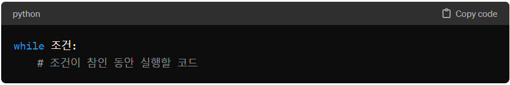

파이썬 while문에 대해 설명해주세요
파이썬 while문에 대해 설명해주세요
 파이썬에서 while 문은 주어진 조건이 참(True)인 동안 코드 블록을 반복 실행하는 데 사용되는 기본적인 반복 제어 구조입니다. while 문의 조건이 거짓(False)이 되면, 반복 실행이 중단됩니다. 이는 특정 조건을 기반으로 반복 작업을 수행할 때 유용하게 사용됩니다.
파이썬에서 while 문은 주어진 조건이 참(True)인 동안 코드 블록을 반복 실행하는 데 사용되는 기본적인 반복 제어 구조입니다. while 문의 조건이 거짓(False)이 되면, 반복 실행이 중단됩니다. 이는 특정 조건을 기반으로 반복 작업을 수행할 때 유용하게 사용됩니다.
기본 구조 :
- 
- 조건: 이 조건이 참(True)인 동안, while 루프 아래에 있는 코드 블록이 반복 실행됩니다. 조건이 거짓(False)이 되면 반복이 중단됩니다.
예제 코드 :
# 카운터를 사용한 기본적인 while 루프
count = 0
while count < 5:
print("count:", count)
count += 1 # 카운터 증가
# 무한 루프와 break 사용
while True:
user_input = input("계속하려면 'y'를, 중단하려면 'n'을 입력하세요: ")
if user_input == 'n':
break # 루프 중단
# continue 사용
n = 0
while n < 10:
n += 1
if n % 2 == 0:
continue # 짝수인 경우 아래 코드를 실행하지 않고 다음 반복으로 건너뜀
print(n)
주요 특징 :
- while 루프는 조건이 참인 동안 코드 블록을 반복적으로 실행합니다.
- 무한 루프는 while True:를 사용하여 생성할 수 있으며, 이러한 루프를 제어하기 위해
- continue 문은 현재 반복의 남은 부분을 건너뛰고 다음 반복으로 넘어가게 합니다.
- while 문을 사용할 때는 반복이 언젠가는 종료되도록 조건을 적절히 설정해야 합니다. 그렇지 않으면 프로그램이 무한히 실행될 수 있습니다.
간단한 덧셈 퀴즈
# 정답 설정
answer = 7 # 예를 들어, 3 + 4의 정답
# 사용자가 정답을 맞출 때까지 반복
while True:
guess = int(input("3 + 4는? "))
if guess == answer:
print("정답입니다!")
break
else:
print("틀렸습니다. 다시 시도해보세요.")
사용자가 '종료'를 입력할 때까지 메시지 받기
while True:
message = input("메시지를 입력하세요(종료하려면 '종료' 입력): ")
if message == "종료":
print("프로그램을 종료합니다.")
break
else:
print(f"당신이 입력한 메시지: {message}")
연습 문제
- '날씨가 좋습니다'문자열을 3번 출력하는 코드를 구현하세요
- 출력되는 num 변수의 값이 5가 되도록 코드를 완성하세요
- 출력되는 num 변수의 값이 10이 되도록 코드를 완성하세요
- 1부터 100까지의 숫자의 합을 구하는 프로그램을 작성하세요.
- 1부터 20까지의 숫자 중에서 짝수만 출력하는 프로그램을 작성하세요.
num = 0
#여기에 while문을 작성하세요
num = 1
#여기에 while문을 작성하세요
print(num)
num = 1
while True :
# 코드를 작성하세요
print(num)
num = 1
total = 0
# 여기에 while문을 작성하세요
print("합계:", total)
num = 1
# 여기에 while문을 작성하세요